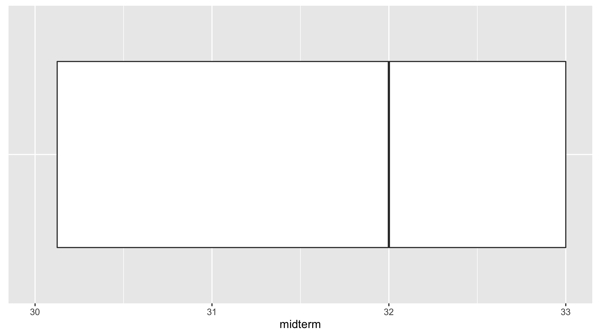
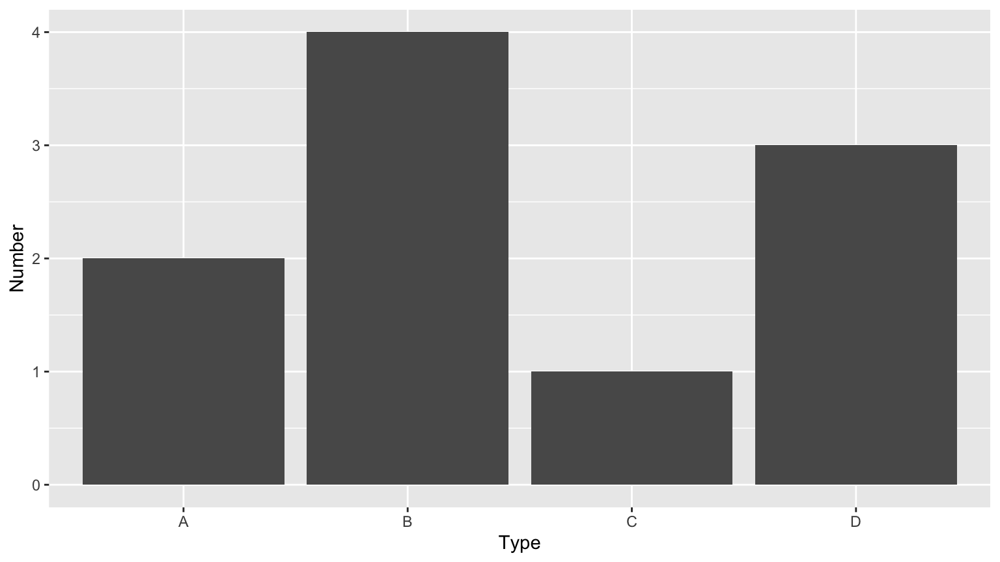
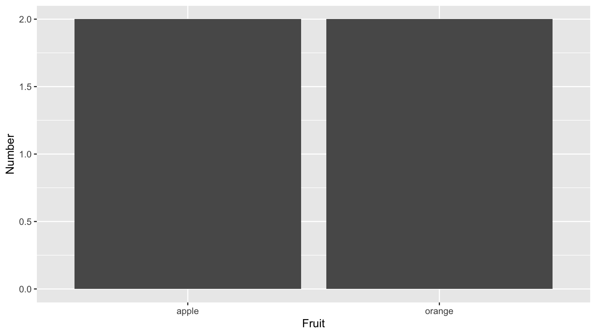
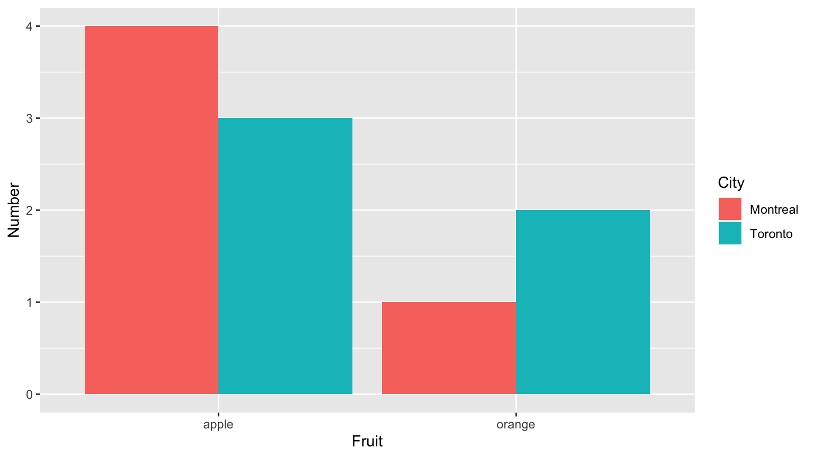
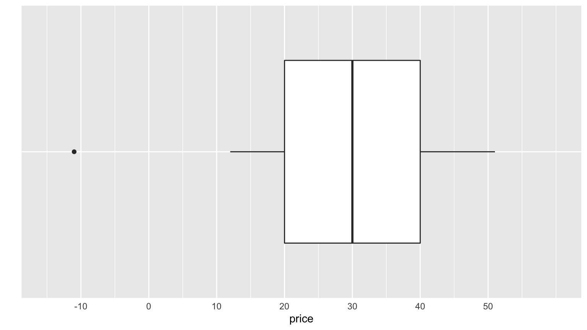
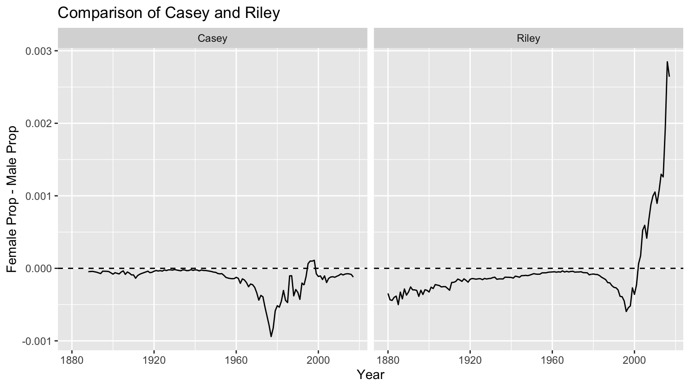

Instructions on taking exams for Smithies and Five College Students. Print the exam in color.
Boxplot of scores (out of 34) with no whiskers below. Quartiles were 30.12 / 32 / 33.

Question 2.b):
library(ggplot2)
library(dplyr)
example <- tibble(
type = c("D", "B", "A", "C"),
fruit = c("apple", "apple", "orange", "orange"),
city = c("Toronto", "Montreal", "Toronto", "Montreal"),
number = c(3, 4, 2, 1)
)
ggplot(data = example, mapping = aes(x = type, y = number)) +
geom_col() +
labs(x = "Type", y = "Number")
Question 2.c):

Question 2.d):
ggplot(data = example, mapping = aes(x = fruit, y = number, fill = city)) +
geom_col(position = "dodge") +
labs(x = "Fruit", y = "Number", fill = "City")
Question 3:

Question 4, modified to show difference in proportion

Instructions on taking exams for Smithies and Five College Students. Print the exam in color.
left_join(), right_join(), inner_join(), full_join(), and anti_join(). Go over the examples in Lec19.#general_announcement: this will give you a feel for the types of questions to expect.